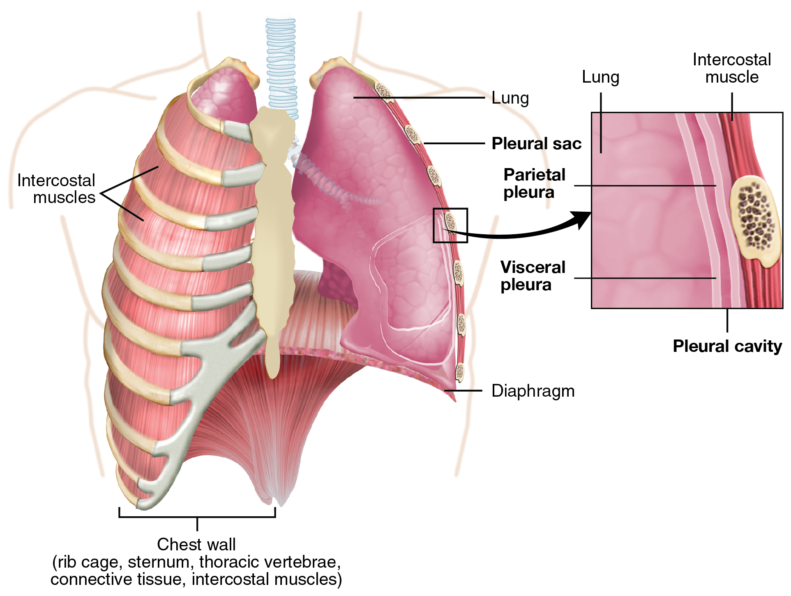
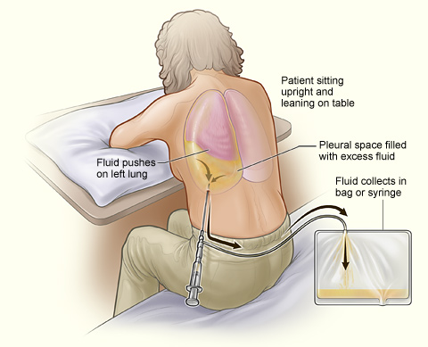

檢查
Pleural fluid analysis ｜ 胸水分析 · Thoracentesis 筆記更新 2026-07-25· 整理狀態：可用
加入閱讀清單 其他名稱 5 Pleural fluid analysis · 胸水分析 · Thoracentesis · 胸腔穿刺 · Light's criteria
判讀速查
Exudate（Light's，任一項成立即是） ：胸水/血清 protein > 0.5 ｜胸水/血清 LDH > 0.6 ｜胸水 LDH > 血清 LDH 正常上限的 2/3
要引流的紅旗 ：肉眼膿｜Gram stain/culture 陽性｜pH < 7.20 ｜glucose < 40 mg/dL｜LDH > 1000 IU/L
TB 胸膜炎 ：ADA > 40 U/L ＋ 淋巴球為主
原理 Principle
flowchart TD
N["胸膜腔<br/>平時僅數 mL・生成＝吸收"]
N --> P1["壓力失衡<br/>靜水壓↑／膠體滲透壓↓"]
N --> P2["通透性改變<br/>發炎・感染・腫瘤"]
P1 --> T["Transudate 漏出液<br/>只漏水・蛋白留在血管"]
P2 --> E["Exudate 滲出液<br/>蛋白與 LDH 一起漏出"]
E --> C["細菌＋嗜中性球<br/>密閉腔室無氧代謝"]
C --> L["pH↓ glucose↓ LDH↑"]
classDef hub fill:#263238,stroke:#000,color:#fff,font-weight:bold
classDef tr fill:#1b5e20,stroke:#0b3d0b,color:#fff,font-weight:bold
classDef ex fill:#e65100,stroke:#a33d00,color:#fff,font-weight:bold
classDef lab fill:#0d47a1,stroke:#062a5e,color:#fff,font-weight:bold
class N hub
class T tr
class E ex
class L lab
筆記中的流程與關係 Light's criteria 為什麼是這三條
全都在問同一件事：蛋白質類的大分子有沒有跟著水一起漏出來 。
血管只是「被擠出水」→ 大分子留在血管內 → 比值低（transudate）；
血管「破了洞」→ protein 與 LDH 一起跑出去 → 比值高（exudate）。
三條是 or 不是 and——任一項成立就算 exudate 。設計上刻意偏向高敏感度，寧可錯抓也不放過。

壁層胸膜貼胸壁、臟層胸膜包肺，兩者之間是潛在的 pleural cavity；與上方 Mermaid 合看，可把「壁層端生成 → 淋巴回收失衡 → 重力依賴處（肋膈角）積液」接起來。Source: OpenStax Anatomy and Physiology, Figure 22.14 （CC BY-NC-SA 4.0）。
什麼時候做
寫「決策情境」，不要列疾病清單——那清單無上限，會爆炸。
當你想回答「這包胸水是什麼性質、要不要引流 」的時候
CXR 看到明顯胸水且病因不明 時
已知肺炎但出現胸水，需區分 uncomplicated / complicated / 膿胸時
大量胸水造成呼吸窘迫，需治療性 抽液時（此時同時也是 Chest tube drainage 的範疇）
怎麼做 / 病人準備
項目
內容
姿勢
坐姿前傾趴桌；無法坐則側臥患側朝下
穿刺點
叩診濁音區下緣，肋骨上緣 進針（避開肋骨下緣的神經血管束）；超音波導引可降低氣胸風險
術前必查
PT/INR、血小板 （任何侵入性處置前的底線）、CXR 定位
送檢項目
外觀、細胞數＋分類、protein、LDH、glucose、pH 、Gram stain、細菌培養、抗酸染色＋結核培養、ADA 、細胞學（懷疑惡性時）、amylase（懷疑食道破裂／胰臟疾病）
同時抽血
血清 protein、LDH ——沒有血清值就算不出 Light's criteria

胸腔穿刺常讓病人坐直、前傾伏桌，使肋間隙打開；超音波確認液體與安全路徑後再下針。Source: Wikimedia Commons — Thoracentesis , NHLBI（public domain）。
橫剖面定位：神經血管束位於肋骨下緣，針要貼著下方肋骨的上緣進入胸膜腔。Source: Fraser et al., “The Sound of Safety: DIVOT” Figure 1 （CC BY 4.0）。體表位置可再與 Chest tube drainage 的 safe triangle 圖對照。
判讀 Interpretation
第一步：Transudate 還是 Exudate（Light's criteria）
項目
Exudate 的門檻
胸水 protein / 血清 protein
> 0.5
胸水 LDH / 血清 LDH
> 0.6
胸水 LDH
> 血清 LDH 正常上限的 2/3
任一項成立 → Exudate。三項全不成立 → Transudate。
第二步：這包 exudate 要不要引流
指標
切點
判讀
外觀
肉眼膿
膿胸，立刻引流
Gram stain / culture
陽性
Complicated，引流
pH < 7.20 最敏感 ，一般視為插胸管適應症
Glucose
< 40 mg/dL （部分文獻 < 60）Complicated
LDH
> 1000 IU/L Complicated
灰色地帶與文獻分歧
pH 7.2–7.3 ：不確定區。建議連續追蹤胸水 pH ＋ 臨床觀察再決定。Glucose 切點 ：StatPearls 用 < 40 mg/dL ；較早文獻用 < 60 mg/dL 搭配 pH 7.2–7.3 視為即將形成膿胸 。請跟你的課本核對 ——目前主流採 < 40。pH 下降早於 glucose 下降、也早於 LDH 上升，所以 pH 是最早的警訊。
第三步：細胞分類與特殊標記
發現
指向
嗜中性球為主
急性細菌感染、parapneumonic
淋巴球為主 ＋ ADA > 40 U/L 結核性胸膜炎
淋巴球為主 ＋ ADA 不高
惡性、慢性
嗜酸性球 > 10%
氣胸、血胸、藥物、寄生蟲
血性
惡性、肺栓塞、外傷
Amylase 高
胰臟疾病、食道破裂
細胞學陽性
惡性胸水
ADA 的細節
常用切點 40 U/L ，高盛行區敏感度約 88–91%、特異度 85–93%。
ADA 隨年齡下降，有研究建議 ≤55 歲用較高切點、>55 歲用較低切點 ；屬進階調整，一般仍以 40 U/L 為準。
低盛行區 ADA 的價值主要在排除 （正常則 TB 很不可能）。
干擾與偽陽性
會讓結果失真的因素
往哪個方向偏
已用利尿劑的心衰竭病人 Transudate 被濃縮 → protein/LDH 上升 → 假性 exudate 。此時改看血清−胸水 albumin gradient > 1.2 g/dL 支持 transudate
檢體暴露空氣、延遲送檢
pH 假性升高 （CO₂ 逸散）→ 低估嚴重度。應以血液氣體分析針筒 收集、冰浴、立刻送
用 lidocaine 局麻污染檢體
pH 假性下降
穿刺時劃破血管
血性外觀假象；可比對胸水/血液 Hct 分辨真血胸
檢體放太久
細胞溶解 → LDH 假性升高
與相關檢查的取捨
檢查
優點
缺點
什麼時候選它
本篇（胸水分析） 唯一能定性、定病因、決定引流
侵入性、有氣胸/出血風險
病因不明、或需判斷是否引流
Chest X-ray↗ 快、無創、第一線
只能說「有水」 ，無法分辨性質初步篩檢與追蹤
Chest ultrasound↗ 看 loculation 最佳、可即時導引穿刺、無輻射
依操作者經驗
穿刺前定位、評估分隔
Chest CT↗ 看 pleural thickening、split pleura sign、找肺內病灶
輻射、需搬動病人
引流失敗、懷疑惡性或膿瘍
禁忌與陷阱
絕對不可
情境
絕對不可
為什麼
該做什麼
凝血功能異常／血小板過低未矯正
直接穿刺
出血、hemothorax
先查並矯正 PT/INR 與血小板
大量胸水
單次抽出過多（一般 ≤ 1–1.5 L）
Re-expansion pulmonary edema
分次引流，過程中出現胸痛或咳嗽即停
穿刺進針
沿肋骨下緣 進針
肋骨下緣有肋間神經血管束
沿肋骨上緣 進針
送檢 pH
用一般試管、延遲送檢
CO₂ 逸散使 pH 假性升高，低估嚴重度
血液氣體針筒、冰浴、立即送檢
只送胸水
忘記同時抽血清 protein/LDH
Light's criteria 是比值，算不出來
穿刺同時抽血
常見錯誤
CXR 有水就下 empyema 診斷——沒抽水只能寫 susp.
利尿劑治療中的心衰竭病人被誤判成 exudate（用 albumin gradient 補救）
忘記送抗酸染色與 ADA，漏掉結核
相關連結
 橫剖面定位：神經血管束位於肋骨下緣，針要貼著下方肋骨的上緣進入胸膜腔。Source: Fraser et al., “The Sound of Safety: DIVOT” Figure 1（CC BY 4.0）。體表位置可再與 Chest tube drainage 的 safe triangle 圖對照。
橫剖面定位：神經血管束位於肋骨下緣，針要貼著下方肋骨的上緣進入胸膜腔。Source: Fraser et al., “The Sound of Safety: DIVOT” Figure 1（CC BY 4.0）。體表位置可再與 Chest tube drainage 的 safe triangle 圖對照。